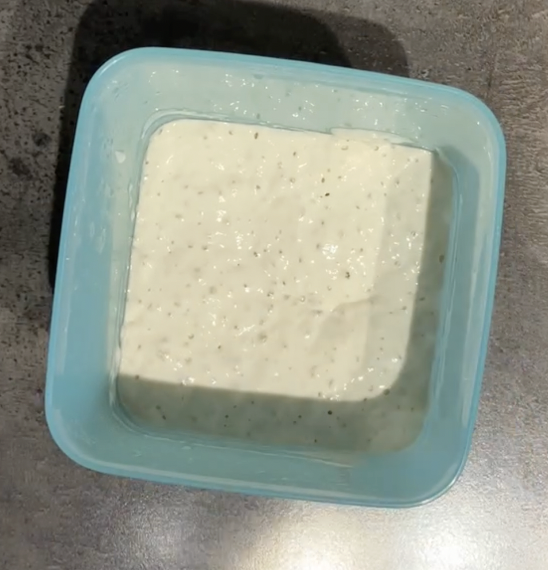

Pizzaens historie starter i den Italienske by Napoli. I slutningen af 1700-tallet, var Napoli en af de største byer i Europa. Napoli var også præget af meget fattigdom, og det er derfra pizzaen har sin oprindelse.
Dengang var pizzaen nemlig en fattigmandsspise, lavet på lokale råvarer, nemlig dej af lokalt mel, tomater og mozzarella. Det er det vi den dag i dag kender som den traditionelle Margherita. Det er derfor entusiaster den dag i dag, stadig stræber efter at bruge italiensk tipo 00 mel, tomater fra San Marzano og bøffelmozzarellaen.
Siden dengang, har pizzaen spredt sig ud til resten af verdenen, hvor der er blevet lavet forskellige versioner af pizzaen hvor end man tager hen.
Tager man til Tyrkiet, laver man noget helt andet fyld, i en aflang form hvor de kalder det en Pide.
I Tyskland har man også lavet sin version som hedder en Flammkuchen.
Selv i Italien er der stor forskel på hvor man tager hen. I Rom har man f.eks. sin version, som er en flad version med tynde kanter, hvorimod den napolitanske er kendt for sine luftige kanter.
Dejen er uden tvivl det sværeste at beherske når man skal lave en god pizza.
Det er til gengæld også det, der gør den store forskel på en almindelig pizza, og en god pizza.
Man kan relativ nemt købe bedre tomater, en bedre ost og lækker topping.
Når man laver en pizzadej, er der mange der foretrækker at lave en fordej. Det gør man blandt andet for at kickstarte gæren. På den måde, kan man lave en dej, med et meget lavt gærforbrug,
og dermed stort set eliminere gærsmagen.
Derudover giver en fordej en lækker smag til dejen, som erstatter gærsmagen.
Surdej er uden tvivl en fantastisk starter. Det er til gengæld også en meget tidskrævende proces. Hvis man ikke har dedikeret halvdelen af sit liv til en surdej, skal man altså ikke fortvivle. Der findes nemlig andre metoder som er nemmere.
Biga er en mere moderne italiensk metode, hvor man laver nogle melholdige strimler, som man lader hæve over et par dage.
Det giver en meget smagsholdig dej, og giver det man kalder en ’puffy crust’
Poolish er min foretrukne fordej. Det er også en italiensk metode, men som hurtigere og mere simpel end biga’en. Det er en meget væskeholdig dej, som tager ca. 5 minutter at røre sammen. Derefter skal det bare stå natten over, og så er det klar til brug. Den fungerer rigtig godt til den klassiske napolitanske stil.
Toppingen er det der skal give smagen til din pizza. Hvis man skal følge de italienske principper, skal man holde toppingen simpel, og lade smagende blomstre. Men det behøver ikke være dyrt.
Er man på et stramt budget, kan man sagtens få en lækker pizza, som smager italiensk. Køber man en dåse flåede tomater, en kugle frisk mozzarella og en billig pakke kogt skinke, kan det smage rigtig godt.
Der findes utallige versioner af tomatsovs, men de fleste italienere laver den mere simpel end man lige skulle tro. Hvis man tager en dåse, flåede tomater, tilføjer lidt salt og en håndfuld basilikumblade, så skal det bare moses og der har du den lækreste tomatsovs man kan få fingrende i ifølge mig.
Hvis man skal lave pizzaer til særlige lejligheder, eller bare har lyst til at prøve en mere eksklusiv pizza, findes der utallige lækre italienske råvare.
Man kan opgradere alt fra San Marzano tomater og bøffelmozzarella, til diverse italienske skinker og pølser. Man kan få mange lækre råvare i diverse supermarkeder, men hvis man mangler inspiration, eller er på udkig efter noget lidt ekstra lækkert, er der også hjemmesider som pizzashoppen som er værd at tjekke ud.
Pizzashoppen: Pizzashoppen
Er man en entusiastisk pizzabager, er der ingen tvivl om at udstyret kan gøre den helt store forskel.
Har man plads, kan man købe pizzaovne i mange forskellige former og prisklasser.
Der findes elektriske pizzaovne, som er nemme at håndtere, men som stadig kan komme højt nok op i temperaturer til at lave lækre pizzaer.
Salling er eksempelvis udkommet med en pizzaovn i en rimelig prisklasse.
Link: Salling pizzaovn
Har man en terrasse kan man også overveje en pizzaovn på gas. Der findes utallige gas pizzaovne, så man kan finde en der passer til ens budget.
Enhver pizzaspade kan fungere. Men man kan lige så godt finde en der passer nogenlunde med målende. Personligt foretrækker jeg en metalspade over en træspade.
Hvis man planlægger at lave mange pizzaer, vil jeg anbefale en perforeret spade (med huller).
Det gør at man nemt kan få melet af bunden, hvilket ellers har nemt ved at brænde på, og give en besk smag.
Man kan finde pizzaudstyr mange steder. Nedenunder har jeg linket til et par specialforretninger indenfor pizzauniverset.
Pizzashoppen
Pizzapal
Pizzafredag
picopizza
Credit: pizzapedia